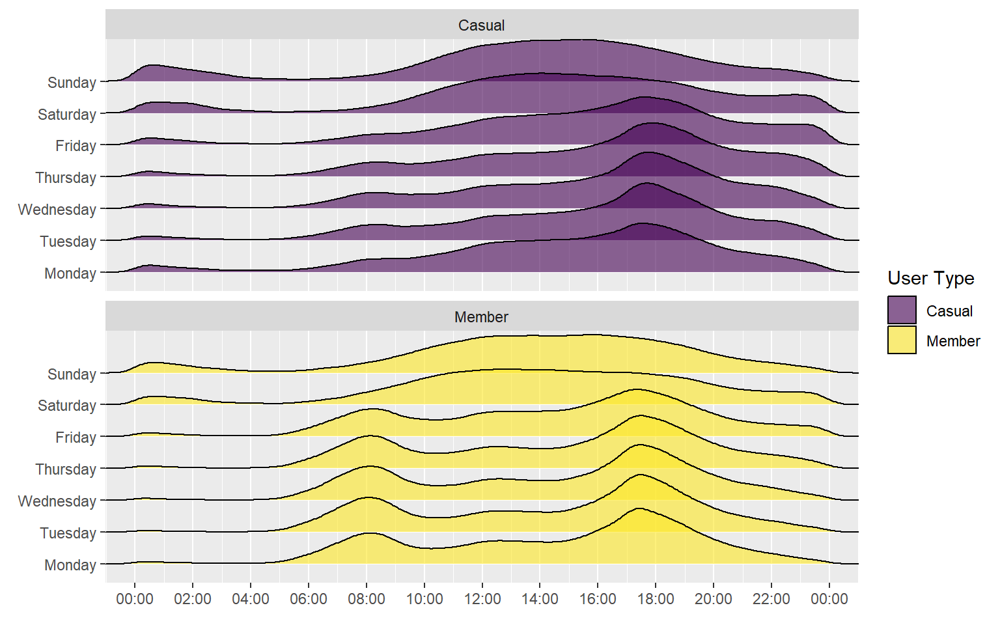
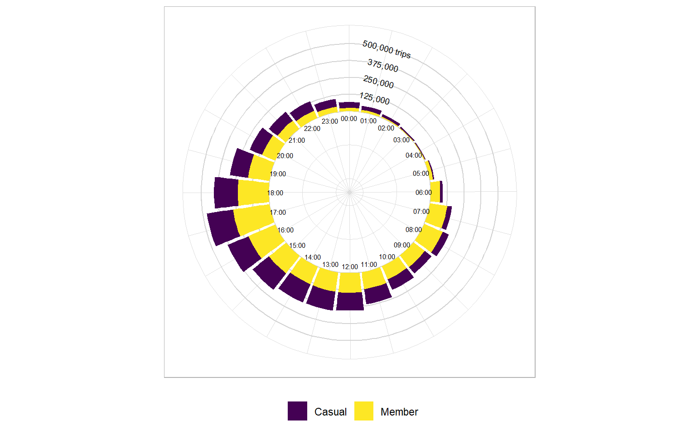
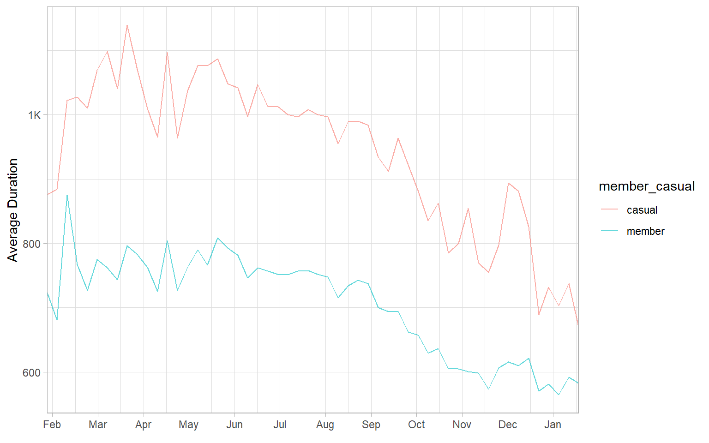
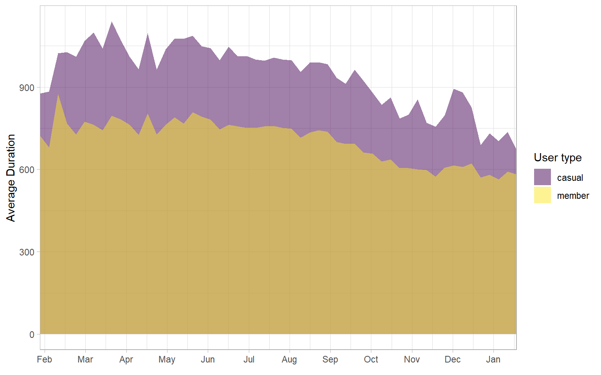

Analyse
We will continue using R and Rstudio for the Analyse step of the process. At this stage we have a cleaned and unified dataset to work with, now we will proceed to analyse it. We will manipulate the data so it provides useful information, for example, we will obtain the length of the ride by calculating the difference between the end and the start time of the ride.
1 - Preparing our working environment.
1.1 - Installing required packages.
# we use tidyverse for most of the data wrangling
install.packages("tidyverse")
# we use ggplot2 for plotting
install.packages("ggplot2")
install.packages("ggridges")
# we use skimr for skim_without_charts()
install.packages("skimr")
# We use viridis for aesthetics
install.packages("viridis")
install.packages("leaflet")1.2 - Loading packages.
library(tidyverse)
library(ggplot2)
library(ggridges)
library(ggpubr)
library(skimr)
library(data.table)
library(lubridate)
library(scales)
library(viridis)
# Libraries for the leaflet
library(leaflet)
library(htmlwidgets)
library(htmltools)2 - Loading data.
#Loading cleaned data from .csv file
trip_data_cleaned <- fread("C:/Users/sicox/Documents/Google Data Analytics/Capstone Project/Case 1 Bike sharing/To build repository/trip_data_clean.csv")3 - Transforming data.
We will use the original data to find useful information for our analysis and we will add it to the dataset in new columns. During the previous stage of the process, we obtained the length of the ride from data in the columns started_at and ended_at.
3.1 - Date - time data.
We will extract information from the started_at column like the day of the week and week number.
# Day number in day column.
trip_data_cleaned$day <- format(trip_data_cleaned$started_at, "%d")
# Month number in day month column.
trip_data_cleaned$month <- format(trip_data_cleaned$started_at, "%m")
# Year in year column
trip_data_cleaned$year <- format(trip_data_cleaned$started_at, "%Y")
# Day of week in day_of_week column.
trip_data_cleaned$day_of_week <- format(trip_data_cleaned$started_at, "%A")
# Week number in week column.
trip_data_cleaned$week <- format(trip_data_cleaned$started_at, "%W")
# Date in date column.
trip_data_cleaned$date <- date(trip_data_cleaned$started_at)4 - Data analyzis
4.1 - Rideable type usage.
We will begin analyzing the trips by rideable type:
# Shows a bar chart grouping rideable types and showing the number of rides, also the bars are divided by user type.
ggplot(data = trip_data_cleaned) +
geom_bar(mapping = aes(x = str_to_title(gsub("_"," ",rideable_type)), fill = str_to_title(member_casual)), alpha = 0.6) +
labs(x = "Rideable types", y = "Number of Rides", fill = "User type") +
scale_fill_viridis(discrete = TRUE) +
scale_y_continuous(labels = label_number_si()) +
theme_light()
Findings:
The majority of trips are made by members.
Classic bikes are the most used rideable type, followed by electric bikes and lastly, docked bikes. Members use classic bikes the most with almost 2 million trips in the last twelve months. Their second most used bike is the electric bike. There are no trips made by members with docked bikes
Casual users made trips mostly on classic bikes. Their second most used bike is the electric bike. Casual users account for all trips made with docked bikes.
4.2 - Rides by month.
# Rides per month
ggplot(data = trip_data_cleaned) +
geom_bar(mapping = aes(x = floor_date(started_at, unit = "month"), fill = str_to_title(member_casual)),
position = "dodge",
alpha = 0.6) +
labs(x = element_blank(), y = "Number of Rides", fill = "User type") +
scale_x_datetime(date_labels = "%b %y", breaks = "month") +
scale_fill_viridis(discrete = TRUE) +
scale_y_continuous(labels = label_number_si()) +
theme_light()
Findings:
We can observe a higher demand during the warmer months, casual user ridership drops significantly during mid-fall and winter. The month with the lowest demand was February, the month with the highest demand was August.
4.3 - Ride/date Heatmap.
We will continue our analysis by looking into trip data per week.
We will generate a data frame with the information required to plot a heatmap that will help us visualize the number of trips during the weeks within our analysis period.
# preparing data before loading
trip_data_date <- trip_data_cleaned %>%
select(day_of_week, week, year, date) %>%
group_by(date) %>%
mutate(count_trips = n()) %>%
distinct(date, .keep_all = TRUE)
#To assign an order to the days of the week otherwise they are charted alphabetically
trip_data_date$day_of_week <- ordered(trip_data_date$day_of_week,
levels = c("Monday", "Tuesday", "Wednesday", "Thursday", "Friday", "Saturday", "Sunday"))
#We need to change the field week from character to numeric in order to be able to assign the scale for x axis
trip_data_date$week <- as.numeric(trip_data_date$week)Plotting heatmap.
ggplot(data = trip_data_date) +
#colour will give us the white grid between the data spots
geom_tile(mapping = aes(x = week, y = day_of_week, fill = count_trips), colour = "white", na.rm = FALSE) +
#Using viridis colour pallet
scale_fill_viridis(option = "D", name = "Number of trips") +
#expand is used to close remove the extra space on the sides, the breaks will give us the spaces to place the months
scale_x_continuous(expand = c(0, 0),breaks = seq(01, 52, length = 12),
labels = c("Jan", "Feb", "Mar", "Apr", "May", "Jun", "Jul", "Aug", "Sep", "Oct", "Nov", "Dec")) +
#to wrap the data by year, we set ncol to 1 so the other chart is presented below and not to the side.
facet_wrap(~year, ncol = 1) +
#to reverse the order of data in the y axis
scale_y_discrete(limits = rev) +
#to use a brighter theme
theme_light() +
#to remove the x axis label
labs(x = element_blank(), y = element_blank())
Findings:
We can observe that there is an increase in demand during the last weeks of May and continues until the last weeks of September. During this period the number of trips increases during the weekends been Saturday the day with the highest demand.
We will further analyze data per week and day of the week segregating the data by user type.
# preparing data before loading
## we have to generate another set of data, the previous one had trip count by day, and I have not been able to use a dataset with separation by user type, the ##difficulty appears when trying to combine the trip numbers in order to plot a dataset combining both user types (like the plot above)
## Because of this I need to generate another data set with the divided information in order to plot it.
trip_data_date_user <- trip_data_cleaned %>%
select(day_of_week, week, year, date, member_casual) %>%
group_by(date,member_casual) %>%
mutate(count_trips = n()) %>%
distinct(date, .keep_all = TRUE)
#To assign an order to the days of the week otherwise they are charted alphabetically
trip_data_date_user$day_of_week <- ordered(trip_data_date_user$day_of_week,
levels = c("Monday", "Tuesday", "Wednesday", "Thursday", "Friday", "Saturday", "Sunday"))
#We need to change the field week from character to numeric in order to be able to assign the scale for x axis
trip_data_date_user$week <- as.numeric(trip_data_date_user$week)
# Data frame for members only
member_heat_map <- trip_data_date_user %>%
filter(member_casual == "member")
#Data frame for casual riders only
casual_heat_map <- trip_data_date_user %>%
filter(member_casual == "casual")member_plot <- ggplot(data = member_heat_map) +
#colour will give us the white grid between the data spots
geom_tile(mapping = aes(x = week, y = day_of_week, fill = count_trips), colour = "white", na.rm = FALSE) +
#Using viridis colour pallet
scale_fill_viridis(option = "D", name = "Number of trips") +
#expand is used to close remove the extra space on the sides, the breaks will give us the spaces to place the months
scale_x_continuous(expand = c(0, 0),breaks = seq(01, 52, length = 12),
labels = c("Jan", "Feb", "Mar", "Apr", "May", "Jun", "Jul", "Aug", "Sep", "Oct", "Nov", "Dec")) +
#to wrap the data by year, we set ncol to 1 so the other chart is presented below and not to the side.
facet_wrap(~year , ncol = 1) +
#to reverse the order of data in the y axis
scale_y_discrete(limits = rev) +
#to use a brighter theme
theme_light() +
#to remove the x axis label
labs(x = element_blank(), y = element_blank()) +
labs(title = "Member Riders") casual_plot <- ggplot(data = casual_heat_map) +
#colour will give us the white grid between the data spots
geom_tile(mapping = aes(x = week, y = day_of_week, fill = count_trips), colour = "white", na.rm = FALSE) +
#Using viridis colour pallet
scale_fill_viridis(option = "D", name = "Number of trips") +
#expand is used to close remove the extra space on the sides, the breaks will give us the spaces to place the months
scale_x_continuous(expand = c(0, 0),breaks = seq(01, 52, length = 12),
labels = c("Jan", "Feb", "Mar", "Apr", "May", "Jun", "Jul", "Aug", "Sep", "Oct", "Nov", "Dec")) +
#to wrap the data by year, we set ncol to 1 so the other chart is presented below and not to the side.
facet_wrap(~year , ncol = 1) +
#to reverse the order of data in the y axis
scale_y_discrete(limits = rev) +
#to use a brighter theme
theme_light() +
#to remove the x axis label
labs(x = element_blank(), y = element_blank()) +
labs(title = "Member Riders") heatmap_user <- ggarrange(member_plot, casual_plot, ncol = 1, nrow = 2, common.legend = TRUE, legend = "right")heatmap_user
Findings:
We can observe that casual riders use our services the most between the months of May and early October. During this period, their demand increases during the weekends been Saturday the day with the highest demand.
Members use Cyclistic bikes the most between early April up to late October. The maximum amount of trips per day is lower than casual riders, but their distribution is more uniform during their high-demand season.
We could say members use Cyclistic bikes consistently during the week and casual riders use Cyclistic bikes most during the weekends.
4.4 - Rides by day of the week.
We will now analyze the trips made by day of the week and user type.
# to graph trip count by day of the week by user type
trips_user_wday <- trip_data_cleaned %>%
select(day_of_week,member_casual) %>%
group_by(day_of_week,member_casual) %>%
mutate(count_trips = n()) %>%
distinct(day_of_week,member_casual, .keep_all = TRUE)
trips_user_wday$day_of_week <- ordered(trips_user_wday$day_of_week,
levels = c("Monday", "Tuesday", "Wednesday", "Thursday", "Friday", "Saturday", "Sunday"))
ggplot(data = trips_user_wday) +
geom_col(mapping = aes(x = day_of_week,y = count_trips, fill = str_to_title(member_casual)),
position = "dodge",
alpha = .6)+
labs(x = element_blank(), y = "Number of Rides", fill = "User type")+
scale_fill_viridis(discrete = TRUE) +
scale_y_continuous(labels = label_number_si()) Findings:
Findings:
As observed before, members use Cyclistic bikes more uniformly during the week. Demand from casual riders increases during the weekend, been Saturday is the day with the highest demand.
4.5 - Rides per week.
First, we prepare a dataset to reduce the load to process in order to plot our graphic.
trips_user_week <- trip_data_cleaned %>%
select(week,year,member_casual) %>%
group_by(week,year,member_casual) %>%
mutate(count_trips = n()) %>%
distinct(week,year,member_casual, .keep_all = TRUE)
trips_user_week$week <- as.numeric(trips_user_week$week)
# To simplify the plot where a year change happens, we will add 53 to the week value of the following year
# by this we avoid using a face_wrap() by year which will generate two bar graphs but the second one mostly
# empty
trips_user_week$week <- ifelse(trips_user_week$year == "2021", trips_user_week$week, trips_user_week$week + 53)ggplot(data = trips_user_week) +
geom_col(mapping = aes(x = week ,y = count_trips, fill = str_to_title(member_casual)), alpha = .6,position = "dodge")+
labs(x = element_blank(), y = "Number of Rides", fill = "User type") +
scale_x_continuous(expand = c(0, 0), breaks = seq(01, 60, length = 14),
labels = c("Jan", "Feb", "Mar", "Apr", "May", "Jun", "Jul", "Aug", "Sep", "Oct", "Nov", "Dec","Jan","Feb")) +
scale_y_continuous(labels = label_number_si()) +
scale_fill_viridis(discrete = TRUE)+
theme_light()
#Space left to make a graphic per rideable type, have to think the best way to make the data selection for this section.
4.6 - Rides per hour of the day.
trips_user_hour_wday <- trip_data_cleaned %>%
select(day_of_week,member_casual,trip_length,started_at) %>%
mutate(started_time = format(trip_data_cleaned$started_at, "%H:%M")) %>%
group_by(day_of_week,member_casual)
trips_user_hour_wday$day_of_week <- ordered(trips_user_hour_wday$day_of_week,
levels = c("Monday", "Tuesday", "Wednesday", "Thursday", "Friday", "Saturday", "Sunday"))
str1 <- "2022-01-01"
str2 <- ":00"
trips_user_hour_wday$started_time <- as.POSIXct(strptime(paste(str1, trips_user_hour_wday$started_time, str2, sep = ""), "%Y-%m-%d %H:%M:%S"))ggplot(data = trips_user_hour_wday, mapping = aes(x = started_time, y = day_of_week)) +
geom_density_ridges(aes(fill = str_to_title(member_casual)), alpha = .6) +
scale_fill_viridis(discrete = TRUE) +
scale_x_datetime(expand = c(0, 0), labels = date_format("%H:%M", tz = Sys.timezone(location = TRUE)), breaks = "2 hour") +
labs(x = element_blank(), y = element_blank(), fill = "User Type") +
facet_wrap(~str_to_title(member_casual), ncol = 1)
4.7 - Trips per hour of the day.
# Group the time variable by hours
trips_user_hour_wday$by_hour <- cut(trips_user_hour_wday$started_time, breaks = "60 mins")
# Create data frame which counts the number of trips per hour for casual and member riders
hour_circular_chart <- trips_user_hour_wday %>%
group_by(by_hour,member_casual) %>%
mutate(numtrips_1000s = (n()/1000)) %>%
distinct(by_hour, member_casual, numtrips_1000s) %>%
arrange(by_hour)# Create a circular bar chart to show the popularity of each hour
ggplot(hour_circular_chart) +
# Make custom panel grid
geom_hline(aes(yintercept = y), data.frame(y = c(0:4) * 125), color = "lightgrey") +
# Create a stacked bar char
geom_bar(aes(x = by_hour, y = numtrips_1000s, fill = str_to_title(member_casual)), stat="identity") +
# Create circular shape which starts in the mid-line
coord_polar(start = -0.135, direction = 1) +
ylim(-600, 500) +
# Add x-axis labels
annotate(x = 1, y = -50, label = "00:00", geom = "text", size = 2) +
annotate(x = 2, y = -50, label = "01:00", geom = "text", size = 2) +
annotate(x = 3, y = -50, label = "02:00", geom = "text", size = 2) +
annotate(x = 4, y = -50, label = "03:00", geom = "text", size = 2) +
annotate(x = 5, y = -50, label = "04:00", geom = "text", size = 2) +
annotate(x = 6, y = -50, label = "05:00", geom = "text", size = 2) +
annotate(x = 7, y = -50, label = "06:00", geom = "text", size = 2) +
annotate(x = 8, y = -50, label = "07:00", geom = "text", size = 2) +
annotate(x = 9, y = -50, label = "08:00", geom = "text", size = 2) +
annotate(x = 10, y = -50, label = "09:00", geom = "text", size = 2) +
annotate(x = 11, y = -50, label = "10:00", geom = "text", size = 2) +
annotate(x = 12, y = -50, label = "11:00", geom = "text", size = 2) +
annotate(x = 13, y = -50, label = "12:00", geom = "text", size = 2) +
annotate(x = 14, y = -50, label = "13:00", geom = "text", size = 2) +
annotate(x = 15, y = -50, label = "14:00", geom = "text", size = 2) +
annotate(x = 16, y = -50, label = "15:00", geom = "text", size = 2) +
annotate(x = 17, y = -50, label = "16:00", geom = "text", size = 2) +
annotate(x = 18, y = -50, label = "17:00", geom = "text", size = 2) +
annotate(x = 19, y = -50, label = "18:00", geom = "text", size = 2) +
annotate(x = 20, y = -50, label = "19:00", geom = "text", size = 2) +
annotate(x = 21, y = -50, label = "20:00", geom = "text", size = 2) +
annotate(x = 22, y = -50, label = "21:00", geom = "text", size = 2) +
annotate(x = 23, y = -50, label = "22:00", geom = "text", size = 2) +
annotate(x = 24, y = -50, label = "23:00", geom = "text", size = 2) +
# Annotate y-axis scaling labels
annotate(x = 2, y = 125, label = "125,000", geom = "text", size = 2.5, angle = 345) +
annotate(x = 2, y = 250, label = "250,000", geom = "text", size = 2.5, angle = 345) +
annotate(x = 2, y = 375, label = "375,000", geom = "text", size = 2.5, angle = 345) +
annotate(x = 2, y = 500, label = "500,000 trips", geom = "text", size = 2.5, angle = 345) +
scale_fill_viridis_d() +
theme_light() +
theme(axis.title = element_blank(), axis.ticks = element_blank(), axis.text = element_blank(), legend.position = "bottom",
legend.title = element_blank())
5 - Ride length analysis.
During the previous stage, we found that some trips lasted over 24 hours, and a few of them lasted several days. In the previous steps of our analysis we have observed details from data of all trips, but we will put more specific data under the scope.
Previously we noted that some trips last longer than 24 hours, some even go through several days. Even though these trips are real and could be caused by several factors, the prolonged duration of some of them could skew our analysis in a non-representative way. We will observe the impact of keeping or removing these outliers from our study.
trip_data_cleaned %>%
summarize(mean(trip_length),min(trip_length),max(trip_length),sd(trip_length))The maximum trip length shown equals to almost 39 days, and the standard deviation shown is significantly high.
We will proceed to apply the Interquartile range approach to our trip length data.
Our initial dataset has 4584724 observations
#IQR Interquartile Range to find outliers
#The interquartile range is the central 50% or the area between the 75th and the 25th percentile of a distribution.
#A point is an outlier if it is above the 75th or below the 25th percentile by a factor of 1.5 times the IQR.
Q <- quantile(trip_data_cleaned$trip_length, probs=c(.25, .75), na.rm = FALSE)
iqr <- IQR(trip_data_cleaned$trip_length)
up <- Q[2]+1.5*iqr # Upper Range
low <- Q[1]-1.5*iqr # Lower Range
outliers <- subset(trip_data_cleaned, trip_data_cleaned$trip_length < (Q[1] - 1.5*iqr) | trip_data_cleaned$trip_length > (Q[2]+1.5*iqr))
trip_data_no_outliers <- subset(trip_data_cleaned, trip_data_cleaned$trip_length > (Q[1] - 1.5*iqr) & trip_data_cleaned$trip_length < (Q[2]+1.5*iqr))Using the IQR approach we would remove 348761 observations and the new basic statisticall data would be as follows:
trip_data_no_outliers %>%
summarize(mean(trip_length),min(trip_length),max(trip_length),sd(trip_length))outliers <- boxplot(trip_data_cleaned$trip_length, plot=FALSE)$out
trip_data_no_outliers <-trip_data_cleaned[-which(trip_data_cleaned$trip_length %in% outliers),]##decide with the team as if to keep or not the outliers for our analysis. ## After making a decision we can
We have 348761 outliers, removing them will leave 4235963 observations which represent 92.4% of the original data.
5.1 - Average ride length.
By day of the week.
trips_user_wday <- trip_data_no_outliers %>%
select(day_of_week,member_casual,trip_length) %>%
group_by(day_of_week,member_casual) %>%
mutate(count_trips = n(), average_length = mean(trip_length)) %>%
distinct(day_of_week,member_casual, .keep_all = TRUE)
trips_user_wday$day_of_week <- ordered(trips_user_wday$day_of_week,
levels = c("Monday", "Tuesday", "Wednesday", "Thursday", "Friday", "Saturday", "Sunday","Jan","Feb"))
ggplot(data = trips_user_wday) +
geom_col(mapping = aes(x = day_of_week,y = average_length, fill = str_to_title(member_casual)), alpha =.6 ,position = "dodge")+
labs(x = element_blank(), y = "Average Length", fill = "User type") +
scale_fill_viridis(discrete = TRUE)
By week.
trips_user_week <- trip_data_no_outliers %>%
select(week, year, member_casual,trip_length) %>%
group_by(week, year, member_casual) %>%
mutate(count_trips = n(), average_length = mean(trip_length)) %>%
distinct(week, year, member_casual, .keep_all = TRUE)
trips_user_week$week <- as.numeric(trips_user_week$week)
# To simplify the plot where a year change happens, we will add 53 to the week value of the following year
# by this we avoid using a face_wrap() by year which will generate two bar graphs but the second one mostly
# empty
trips_user_week$week <- ifelse(trips_user_week$year == "2021", trips_user_week$week, trips_user_week$week + 53)# Line chart
ggplot(data = trips_user_week, aes(x = week, y = average_length, group = member_casual)) +
geom_line(aes(color = member_casual), alpha = .6) +
labs(x = element_blank(), y = "Average Duration", fill = "User type")+
scale_x_continuous(expand = c(0, 0),breaks = seq(01, 60, length = 14),
labels = c("Jan", "Feb", "Mar", "Apr", "May", "Jun", "Jul", "Aug", "Sep", "Oct", "Nov", "Dec", "Jan", "Feb")) +
scale_y_continuous(labels = label_number_si()) +
theme_light()
ggplot(data = trips_user_week, aes(x = week, y = average_length, group = member_casual)) +
geom_area(aes(fill = member_casual),position = "identity", alpha = .5) +
labs(x = element_blank(), y = "Average Duration", fill = "User type")+
scale_x_continuous(expand = c(0, 0),breaks = seq(01, 60, length = 14),
labels = c("Jan", "Feb", "Mar", "Apr", "May", "Jun", "Jul", "Aug", "Sep", "Oct", "Nov", "Dec", "Jan", "Feb")) +
scale_y_continuous(labels = label_number_si()) +
scale_fill_viridis(discrete = TRUE)+
theme_light()
6 - Stations
# Data frame that groups trips per station and lat/long
map_data <- trip_data_cleaned %>%
select(start_station_name, start_lat, start_lng) %>%
group_by(start_station_name) %>%
mutate(count_trips = n()) %>%
distinct(start_station_name, .keep_all = TRUE)
#sequence of values that will act as a key to show on the leaflet and group stations that have similar number of trips occurring closely
mybins <- seq(0, 50000, by = 10000)
#viridis palette to show how popular is the station
station_palette <- colorBin(palette ="viridis", domain = map_data$count_trips, na.color = "transparent", bins = mybins)
#text for interactive tooltip
station_text <- paste("Station name: ", map_data$start_station_name, "<br/>", "Number of trips: ", map_data$count_trips, sep = "") %>%
lapply(htmltools::HTML)station_leaflet <- leaflet(map_data) %>%
addTiles() %>%
# Coordinates over the city of Chicago searched in google
setView(lng = -87.6298, lat = 41.8781, zoom = 11) %>%
# Setting map style
addProviderTiles("Esri.WorldGrayCanvas") %>%
# Add circle markers to represent each station
# & add a fill color to show the popularity of each station
# & add an interactive tooltip for detail
addCircleMarkers(~start_lng, ~start_lat, fillColor = ~station_palette(count_trips), fillOpacity = 0.7, color = "white",
radius = 8, stroke = FALSE, label = station_text, labelOptions = labelOptions(style = list("font-weight" = "normal", padding = "3px 8px" ),
textsize = "13px", direction = "auto")) %>%
# Adding a legend
addLegend(pal = station_palette, values = ~count_trips, opacity = 0.9, title = "Number of trips", position = "bottomright")
station_leaflet7 - Saving datasets generated for future use.
#Saving cleaned dataset
fwrite(trip_data_cleaned, file = "trip_data_cleaned.csv", col.names = TRUE, row.name = FALSE)#Saving dataset with no outliers
fwrite(trip_data_no_outliers, file = "trip_data_no_outliers.csv", col.names = TRUE, row.name = FALSE)#Saving outliers dataset
fwrite(outliers, file = "outliers.csv", col.names = TRUE, row.name = FALSE)